# A tibble: 2 × 4
crime_category mean_hour sd_hour n
<chr> <dbl> <dbl> <int>
1 Violent 12.8 6.87 9148
2 Property 12.5 6.63 10371CRJU 705 · Session 6 · Fall 2026
Topic: hypothesis testing — twice. One question, both great traditions.
Learning goals: run t.test() and ttestBF() on the same question; state correctly what each output licenses you to claim.
Statistics thread — lecture + homework
Stanton Ch. 5 → hypothesis testing, both ways: t.test() and ttestBF()
Wrangling thread — lab
R4DS Ch. 19 (+ Ch. 18 skim) → left_join() on our two Chicago files
Last new wrangling skill before next week’s workshop — after today, you own the whole pipeline.
If this course has a thesis, today is it: the two traditions are complements, not rivals — and you will leave able to use both.
Session 5 asked whether violent crimes happen later in the day than property crimes:
# A tibble: 2 × 4
crime_category mean_hour sd_hour n
<chr> <dbl> <dbl> <int>
1 Violent 12.8 6.87 9148
2 Property 12.5 6.63 10371Violent incidents average about 15 minutes later. Session 5 gave us an interval for that gap. Today we get the test — a yes/no verdict machine.
Bootstrap each group’s mean 10,000 times — Session 4’s logic, applied to both groups at once:
boot <- tibble(
Violent = replicate(10000, mean(sample(violent_hours, replace = TRUE))),
Property = replicate(10000, mean(sample(property_hours, replace = TRUE)))
)
boot |>
pivot_longer(everything(), names_to = "group", values_to = "boot_mean") |>
ggplot(aes(boot_mean, fill = group)) +
geom_histogram(bins = 60, alpha = 0.6, position = "identity", color = NA) +
scale_fill_manual(values = unname(crju_colors[c("blue", "garnet")])) +
labs(title = "10,000 bootstrap means per group",
x = "Mean hour of day", y = "Count", fill = NULL)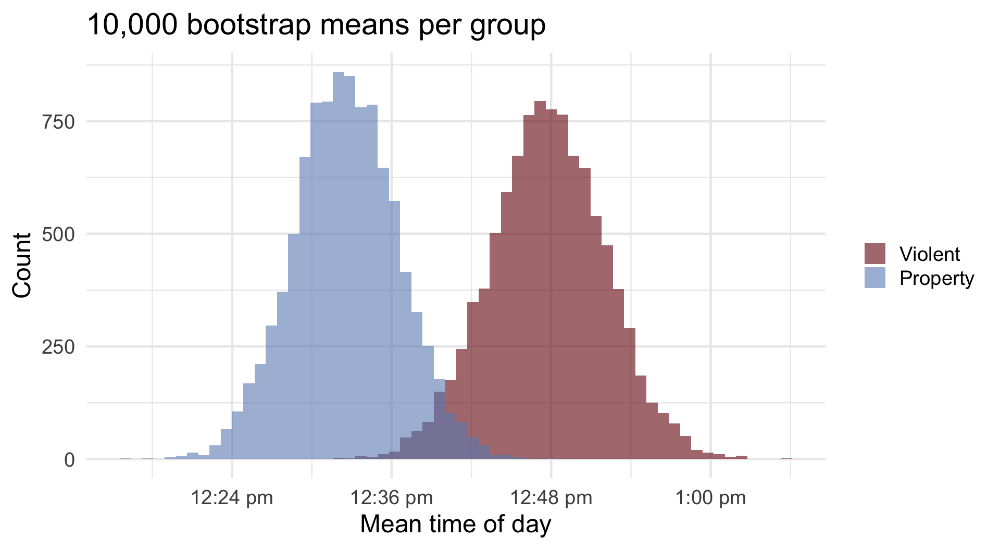
Subtract, pair by pair, and the difference gets its own distribution:
2.5% 97.5%
0.06299314 0.44033505 The middle 95% of plausible differences runs from about 0.06 to 0.44 hours — the interval sits entirely above zero.
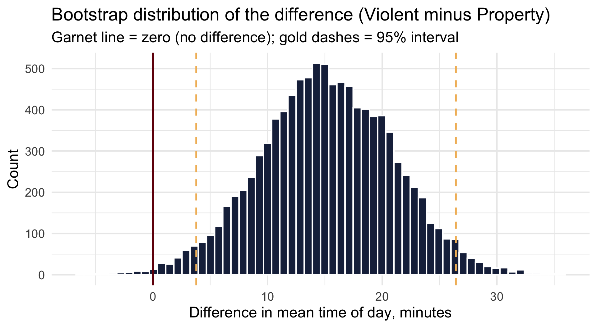
Zero is not among the plausible values. The data lean toward a real (if small) gap.
Erase the real gap on purpose — shift every violent incident earlier by the observed difference — and re-run the exact same machinery:
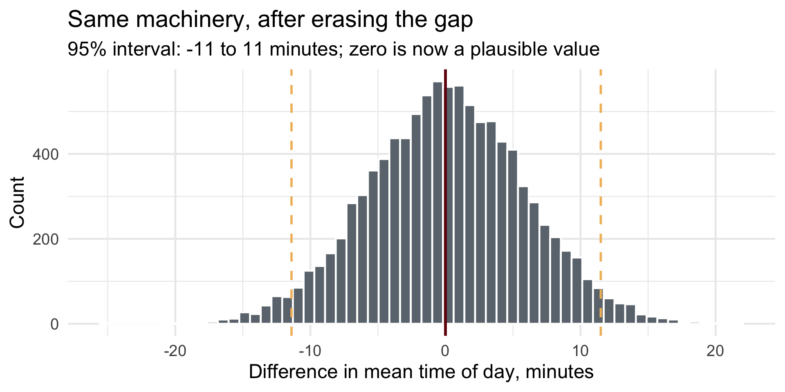
When zero sits comfortably inside, the data are consistent with no difference. Formalize this intuition and you have invented the NHST.
As the true difference grows, the overlap shrinks and p falls. Black = null · green = one alternative · orange = overlap · blue dashes = the α = .05 cutoffs.
It is: the probability of data this extreme or more, if the null is true and the model is right.
It is not:
t.test() on the Real Question
Welch Two Sample t-test
data: hour by crime_category
t = -2.6061, df = 19021, p-value = 0.009164
alternative hypothesis: true difference in means between group Property and group Violent is not equal to 0
95 percent confidence interval:
-0.44272107 -0.06263688
sample estimates:
mean in group Property mean in group Violent
12.54334 12.79602 \(p < .05\) — “statistically significant.” Reject the null. Publish the press release?
Hold that thought until Act III. First, some fine print about what this machine quietly assumed.
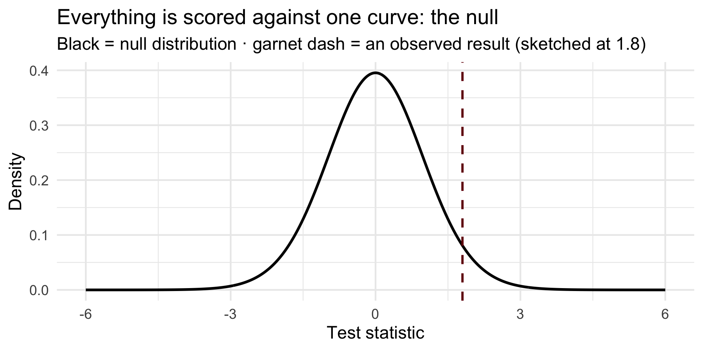
We computed how surprising the data are under the null — and never once said what the alternative world looks like.
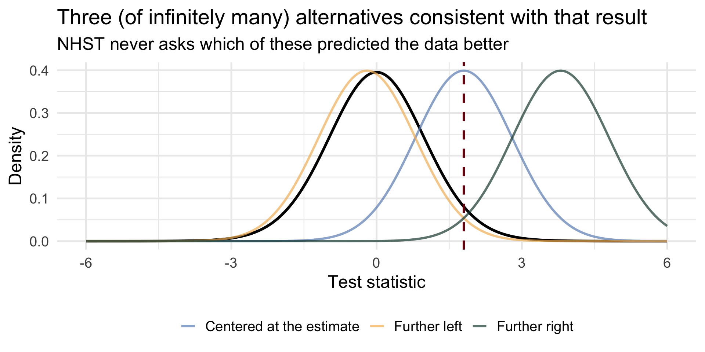
“Reject the null” tells you where you aren’t. It never tells you where you are.
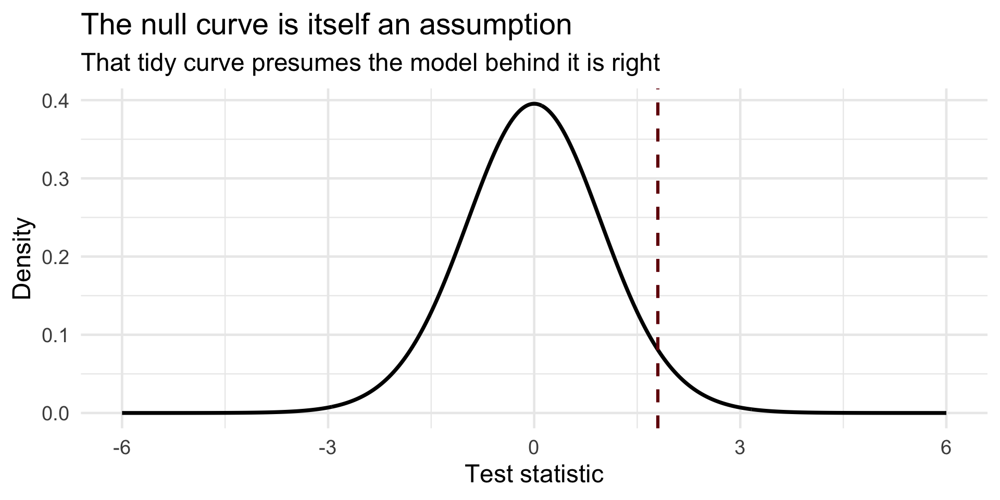
The p-value came from this specific curve — which assumes (roughly) normal-enough data, independent observations, well-behaved variances.
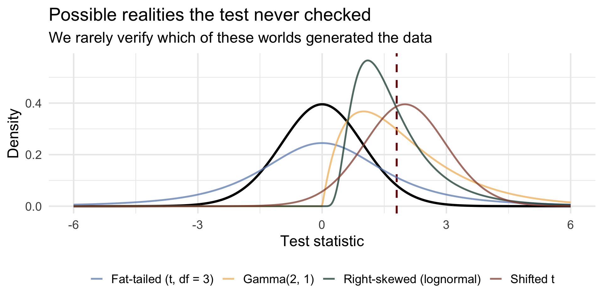
How often do researchers test those assumptions before trusting the p-value? Less often than you’d hope.
\[ P(H \mid \text{data}) = P(\text{data} \mid H) \times P(H) \,/\, P(\text{data}) \qquad \small{\text{posterior} = \text{likelihood} \times \text{prior} / \text{evidence}} \]
| Frequentist | Bayesian | |
|---|---|---|
| Asks | How surprising are these data if \(H_0\) is true? | How probable is each hypothesis, given the data? |
| Probability attaches to | Data, over imagined repeated samples | Hypotheses and parameters directly |
| Prior knowledge | None used | Explicit, stated up front |
| Output | p-value, confidence interval | Posterior distribution, Bayes factor, credible interval |
| “95%” means | The procedure captures the truth in 95% of replications | 95% probability the parameter lies in this interval |
ttestBF()Same question, second tradition. We supply the groups ourselves, so the direction is ours: x − y = Violent − Property.
[1] 0.4887026[1] 2.046234| Frequentist | Bayesian | |
|---|---|---|
| Result | \(p = 0.009\) → reject \(H_0\) | \(BF_{10} = 0.49\) → mild evidence for \(H_0\) |
The Bayes factor compares models. The posterior describes the difference itself — drawn by a sampler (the machinery, called MCMC, is in tonight’s optional appendix):
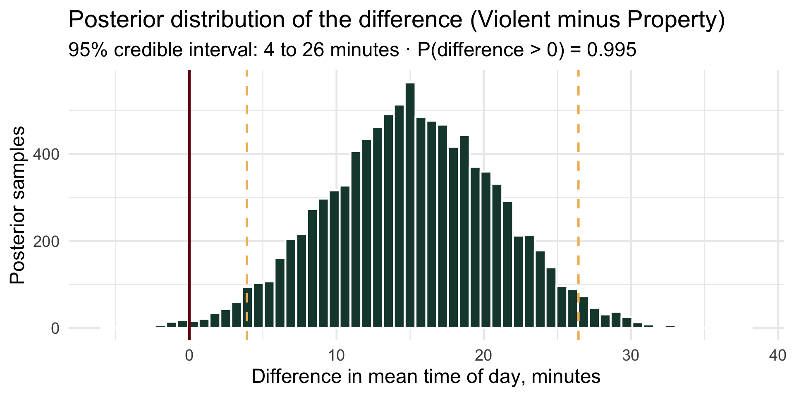
Now say the sentence Session 5 forbade — legally: “There is a 95% probability the true difference lies between about 4 and 26 minutes.” Under the Bayesian license (given the model and prior), that is exactly what this interval means.
One more number every report owes its reader — a standardized effect size (Cohen’s d):
[1] 0.03742312Ten percentage points, exactly the kind of effect a city would fund. Both traditions, go.
2-sample test for equality of proportions with continuity correction
data: c(40, 50) out of c(100, 100)
X-squared = 1.6364, df = 1, p-value = 0.2008
alternative hypothesis: two.sided
95 percent confidence interval:
-0.24719748 0.04719748
sample estimates:
prop 1 prop 2
0.4 0.5 Prior: Beta(6, 4) — mean 0.6, worth about 10 observations. Update each group, then ask the question we care about directly:
[1] 0.9122Given the prior and the data, there is about a 91% probability the program reduces recidivism.
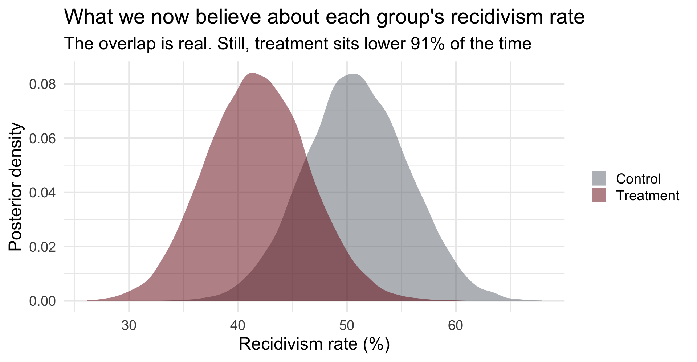
| Frequentist | Bayesian | |
|---|---|---|
| Verdict | \(p = 0.20\): cannot reject “no effect” | \(P(\text{treatment} < \text{control}) \approx 0.91\) |
| Plain English | “This gap could plausibly be luck” | “9-to-1 odds the program works” |
Fix a trivial true effect (Δ = 0.1) and just keep collecting data:
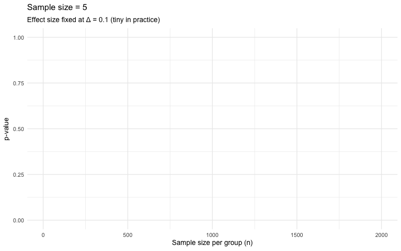
The effect never grows — only n does — and p still dives below .05. Given enough data, everything is “significant.”
Same trivial effect, Bayesian glasses — watch the posterior for the difference as n grows:
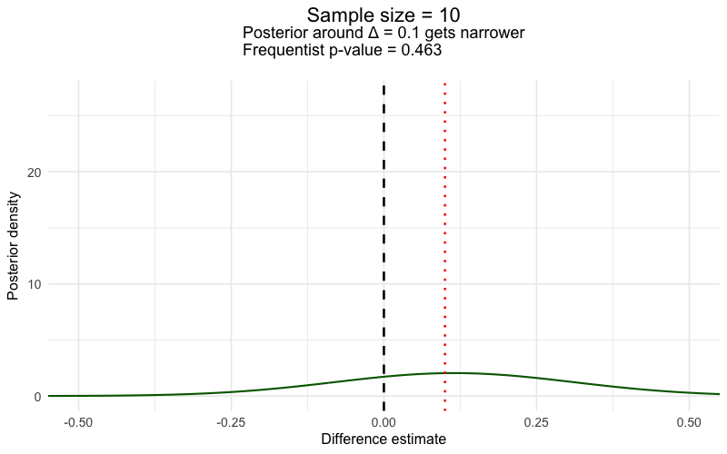
More data doesn’t flip a verdict — it sharpens the estimate, which visibly converges on “about 0.1, i.e., almost nothing.” The tininess stays in view. (This is Act III’s collision, run in slow motion.)
left_join() on the two Chicago files, and the join traps R4DS warned you about (lab page)Not on any exam — this is the machinery behind the two-second ttestBF() call, for the curious.
\[ P(H \mid \text{data}) = \frac{P(\text{data} \mid H)\,P(H)}{\color{#73000A}{P(\text{data})}} \]
That innocent-looking denominator is the probability of the data under every possible hypothesis, weighted by its prior:
\[ \color{#73000A}{P(\text{data}) = \int P(\text{data} \mid \theta)\, P(\theta)\, d\theta} \]
For realistic models this integral is intractable — for most of the 20th century, Bayes was philosophically beautiful and practically unusable.
How Markov chain Monte Carlo “measures the curve” without solving the integral:
A Metropolis sampler exploring a distribution (left) while its samples pile up into that very shape (right):
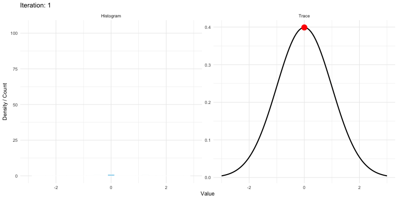
BayesFactor quietly does for you in about two secondsCRJU 705 · Session 6